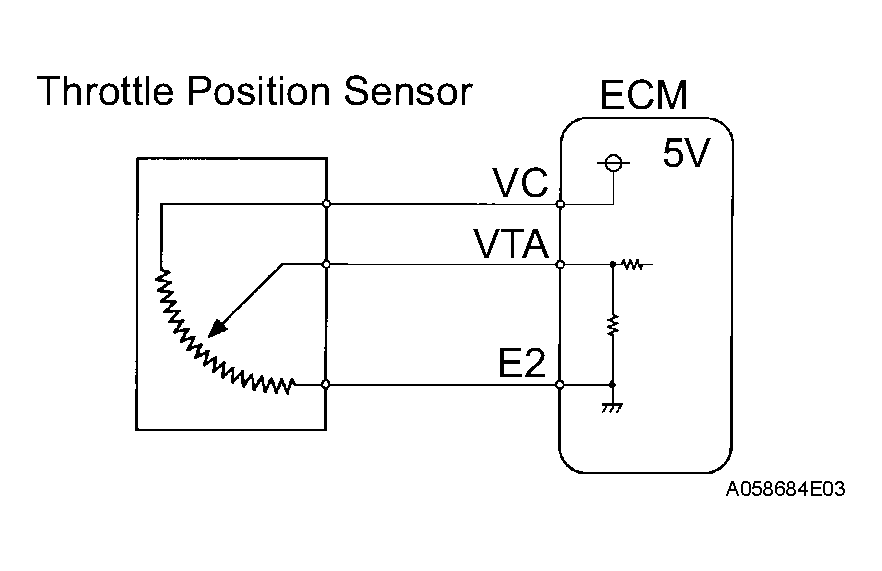

DTC P0120 Throttle / Pedal Position Sensor / Switch "A" Circuit; DTC P0122 Throttle / Pedal Position Sensor / Switch "A" Circuit Low Input; DTC P0123 Throttle / Pedal Position Sensor / Switch "A" Circuit High Input: Description

Courtesy of © TOYOTA, LICENSE AGREEMENT TMS1002HINT:
These DTCs relate to the Throttle Position (TP) sensor.
The TP sensor is mounted on the throttle body and detects the throttle valve opening angle.
When the throttle valve is fully closed, the sensor transmits a signal voltage of approximately 0.3 to 1.0 V to terminal VTA of the ECM. This signal voltage increases in proportion to the opening angle of the throttle valve, reaching approximately 3.2 to 4.9 V when the throttle valve is fully open.
The ECM determines the vehicle driving conditions from these signals and uses this information in functions such as air-fuel ratio correction, power increase correction and fuel cut control.
DTC DETECTION CONDITION AND TROUBLE AREA
| DTC No. | DTC Detection Condition | Trouble Area |
|---|---|---|
| P0120 | VTA less than 0.14 V, or VTA more than 4.91 V for 5 seconds or more (1 trip detection logic) |
|
| P0122 | VTA stays less than 0.14 V for 5 seconds or more (1 trip detection logic) |
|
| P0123 | VTA stays more than 4.91 V for 5 seconds or more (1 trip detection logic) |
|
HINT:
- Fail-safe mode: When any of these DTCs are set, the ECM enters fail-safe mode. During fail-safe mode, the ECM cuts fuel intermittently. Fail-safe mode continues until a pass condition is detected and the ignition switch is turned OFF.
- When any of these DTCs are set, check the throttle valve opening angle using the intelligent tester.
THROTTLE VALVE OPENING ANGLE
| Throttle Valve Fully | Closed Throttle Valve Fully Open | Trouble Area |
|---|---|---|
| 0% | 0% | VC circuit open VTA circuit open or short |
| Approximately 100% | Approximately 100% | E2 circuit open |